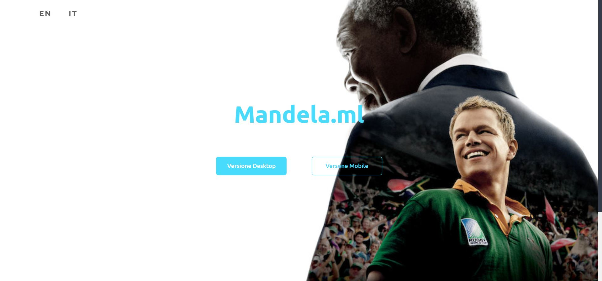
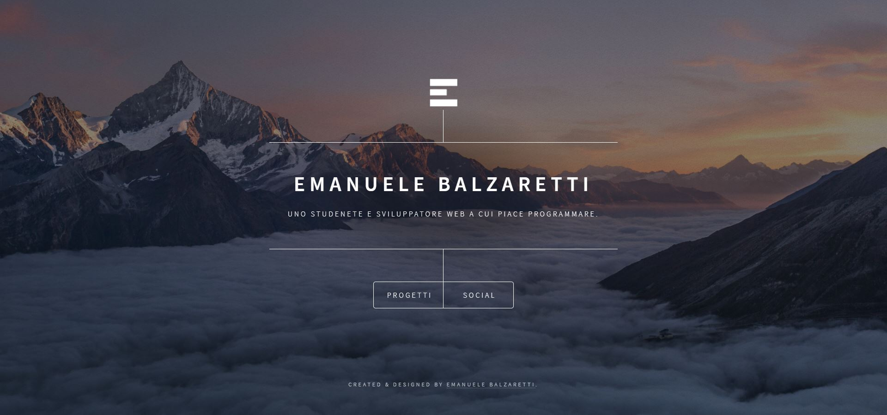
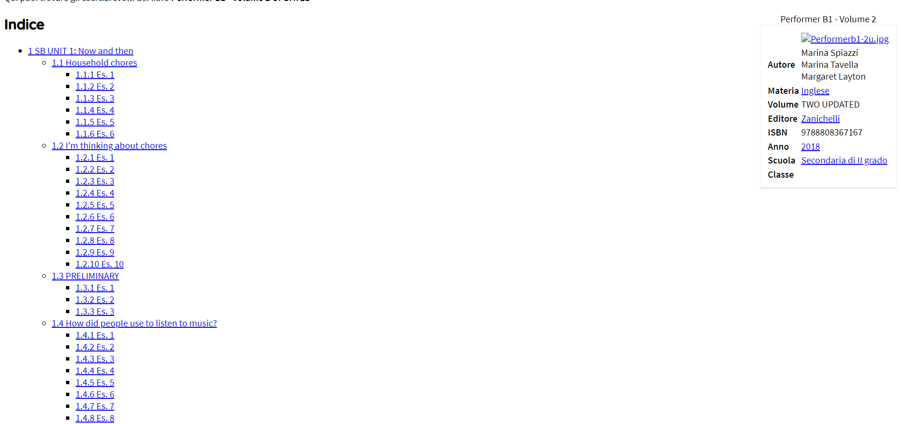

Projects
mandela.ml
Il mio primo vero e proprio sito internet. L'ho progettato per l'esame di terza media. È piaciuto molto ai miei docenti.
L'ho creato con il linguaggio di programmazione HTML e CSS, indispensabili per creare un sito internet. In totale ho scritto 282 linee di codice HTML, 591 di CSS e ci ho messo un mese e mezzo per completarlo (dal 14 aprile al 30 maggio). Il sito web era disponibile in due versioni: la versione "desktop" e "mobile".
Il dominio del sito internet l'ho registrato tramite Freenom, ma sinceramente ora non ha sbatti di ricaricarlo.
ㅤ
ebalza.ga
Il mio secondo sito web. L'ho progettato per tenere traccia dei miei progetti, allenare e migliorare le mie abilità a programmare.
Ho utilizzato il linguaggio di programmazione HTML, CSS e Javascript. Ci ho messo 5 giorni per completarlo.
Come mandela.ml, il dominio del sito internet l'ho registrato tramite Freenom.
ebalza.ga/hellobozo
Probabailmente il progetto più famoso, dato che è molto utile. Teoricamente doveva essere una sottocartella privata, ma tuttora sembrerebbe essere popolare al liceo Marconi.
Ho semplicemente scaricato il sito di Solu, ora tirato giù dalla Zanichelli, e caricato per sicurezza su ebalza.ga.
Dato che la Zanichelli ha tirato giù anche il mio sito, ho cambiato hosting e ho reindirizzato ebalza.ga/hellobozo in un altro sito web (giusto per evitare problemi legali).